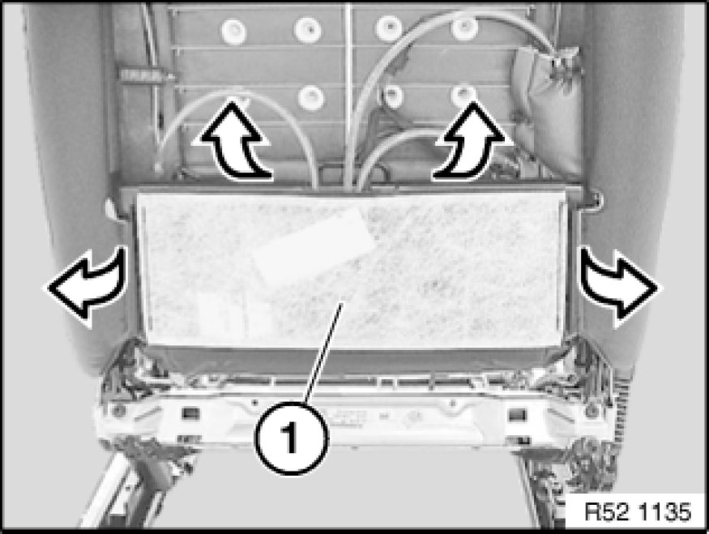
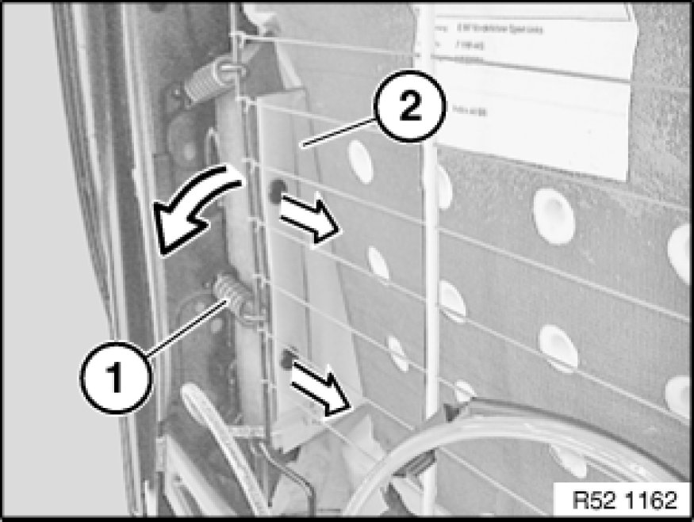
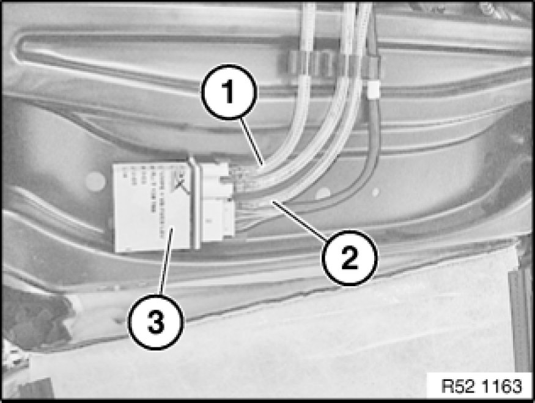

52 15 060 Replacing an Air Cushion for Left or Right Backrest Width Adjustment
52 15 060 - Replacing an air cushion for left or right backrest width adjustment

Necessary preliminary tasks:
- Remove rear panel on front seat Removing and Installing/Replacing Rear Panel on Left or Right Front Seat Backrest

Detach backrest cover (1) from backrest frame.

Note:
Removal of the cushion on the left side is depicted; proceed in the same way for the right side.
Air cushion must be completely drained.
Disconnect spring (1).
Lever out clips with plastic wedge.
Feed out air cushion (2) between spring wire and backrest frame.
Installation:
Insert air cushion without kinks.
Check air cushion for damage.

Unlock quick connector and detach air hoses (1 and 2) from valve housing (3).
If necessary, remove valve housing Removing and Installing/Replacing Valve Housing for Lumbar Support / Backrest.
Installation:
Connections are coded against incorrect assembly.
Air hoses must not be kinked.

Note:
Carry out operational check Performing Function Check with Adapter Cable (for Seat Repairs).